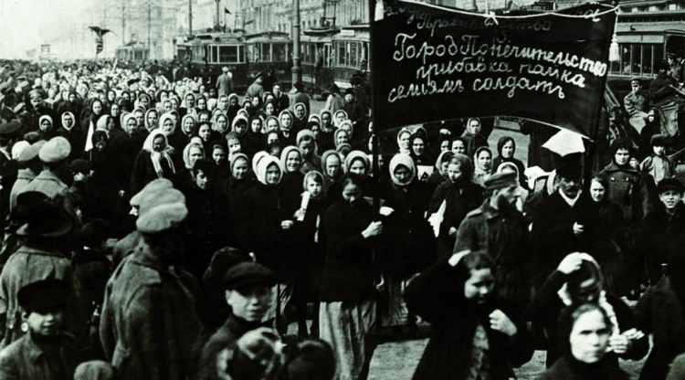

Clara Zetkin, a 19th century socialist political and feminist figure, the German behind International Women's Day on 8th March. From her childhood surrounded by working-class women, to her fight against Nazism. Advocating women's values and rights throughout her life. This is how Clara Zetkin becomes a symbol and inspires the world.
Clara Zetkin, politician and feminist
During her teenage years, Clara Zetkin regularly participated in feminist movements, including the General Association of German Women. In addition to her involvement in feminist movements, a young Russian comrade integrated her into the narodnik community. This revolutionary socialist community was an important period for Clara, as she met Ossip Zetkin, who later became her companion.
Clara Zetkin in the early 1930s
The years passed and Clara never stopped talking about herself and her convictions. Whether through the SPD newspaper or Der Sozialdemokrat, she made herself heard in Switzerland and especially through the Swiss Union of Women Workers, a movement similar to the "Suffragettes" in England. Her fame enabled her to take part in the Second International Congress. During this congress, she highlighted women's work, but especially their place in the class struggle.
In 1892, Clara Zetkin founded the newspaper Die Gleichheit (Equality). The aim of the newspaper was to support and help working women with their working conditions. The situation became more complicated for Clara and her movement, despite the quality of her speeches she was criticised and attempts to suppress her party were considered. During this period of turmoil, nothing affected her and it was at this time that she organised the First International Conference of Socialist Women in Stuttgart.
This congress resonated in the hearts of feminists, who made Clara Zetkin president of the Socialist International Women. In 1910 she was re-elected and it was during this period that she spread the idea of an International Women's Day. This period was linked to the North American workers' demonstrations. The date of 8th March was set in 1977 by the United Nations.

In Russia, on 8th March 1917, hundreds of women demonstrate in the streets
An eternal struggle for rights
If women and men have been fighting for decades, it is for a reason that must be heard by all. When Clara Zetkin proposed International Women's Day, it was to obtain the right to vote for all, but not only that. This date also evokes equality between men and women. France, Germany, Austria and Russia were among the first countries to celebrate International Women's Day.
During all these years, feminist movements developed in the world. These movements of struggle were not always without consequences, such as the fire of 25 March when one hundred and forty women workers lost their lives locked in a textile factory. The suffragette movement was also an important turning point for feminists. It was not until the aftermath of the First World War that the British people questioned the place of women in male jobs.
Today, Clara Zetkin's ideology and in particular that of 8th March are the same. Feminists from Michelle Obama and Emma Watson to Gloria Steinem are symbols of this movement. Access to education for young girls, gender equality, equal rights are their priorities. These acts must be daily, as a symbol of 8th March.
feminism frieze
1364 - 1430
Christine de Pizan, French writer, is recognized as the first feminist by denouncing misogyny.
1770
The "Spinning Jenny" is the first mechanical spinning tool. It marks the opening of factories to women.
1791
Olympe de Gouges, a feminist figure, publishes "Declaration of the Rights of Women and the Citizen".
1850
The first feminist wave begins in countries claiming the right to vote. This is the case in the United States and in Europe.
1918
Suffragette movement in England. They obtain the right to vote.
1930
Marlene Dietrich causes a stir by wearing an outfit from a man's wardrobe. She wears trousers, a shirt and a hat.
1939 - 1945
World War II, women take over the role of men. This has never happened before.
1949
The book that started the second wave, entitled "The Second Sex" written by Simone de Beauvoir.
1977
The United Nations sets 8 March as "International Women's Day".
1990
The third wave refers to a new generation of feminists demanding various rights.
2012
The fourth feminist wave emerges through the use of social networks. The #MeToo movement is the best known.
Suffragettes, a real feminist fiction
Discover "Suffragettes", inspired by real facts, relive the life of these women who lost everything to claim their rights. A historical drama, directed by Sarah Gavron, starring Carrey Mulligan and Helena Bonham Carter.